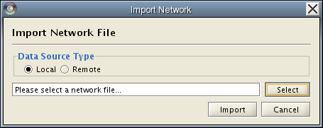
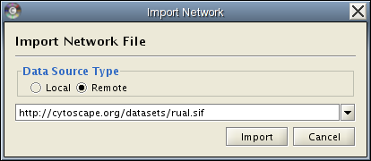
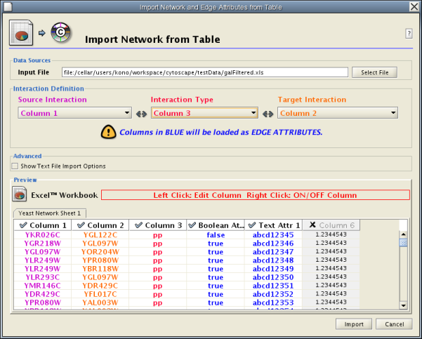
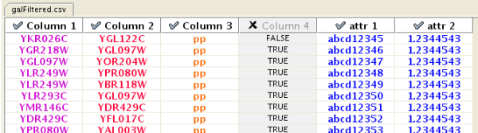
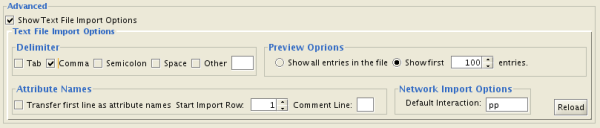
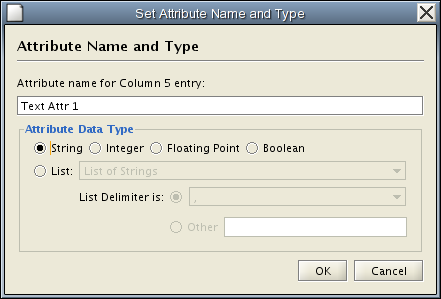

There are 3 different ways of creating networks in Cytoscape:
Network files can be specified in any of the formats described in the [Cytoscape_User_Manual/Network_Formats Network Formats] chapter. Networks are imported into Cytoscape through the Import Network dialog, which can be activated through Menu File → Import → Network. The network file can either be located on the local computer, or it can also be located in a remote computer and referenced with a URL.
By default, Cytoscape load network from the local computer. When the import network dialog is initialized, the data source type “Local” will be selected. To import a network, first click on the “Select” button, which will pop-up a file chooser and let user browse the local disk to choose a network file. User is allowed only to choose Cytoscape recognized network types. After the file is selected, a click on the Import button will import the network. For example, The following steps will load a sample molecular interaction network in SIF format. Use the menu File → Import → Network. select the file “galFiltered.sif” in “sampleData” directory. After a few seconds, a small network of 331 nodes should appear in the main window. The procedure to load network in other format is very similar. To load the same interaction network as a GML, use the menu: File → Import → Network again. In the resulting file dialog box, select the file “sampleData/galFiltered.gml”. Node and edge attribute files as well as expression data and extra annotation can be loaded as well.
Network files may also be loaded directly from the command line using the –N option (works for SIF, GML, and XGMML).

Cytoscape also supports network import through URL. In this case, user should choose “Remote” as the data Source Type on the Import Network dialog. Next the user can either type (or paste) a URL into choice box or select one of the pre-existing bookmarked networks. Cytoscape supports URL bookmarks. A click on the right-most arrow of the comboBox will show a list of available network bookmarks. Cytoscape contains a pre-defined a list of bookmarks, which point to sample network files located on the Cytoscapes web server. Users may add new bookmarks through the Bookmark manager described in the [Cytoscape_User_Manual/Preferences Preferences] chapter.
After the user specifies a URL a click on the import button will load the network from the remote computer.

Network import from URL has an important caveat. Because Cytoscape determines file type primarily (not exclusively) by file extension, it can have trouble importing networks with URLs that don't end in a human readable file name. If Cytoscape does not recognize a meaningful file name with extension in the URL, it will attempt to guess the type of file based on MIME type. If the MIME type is not recognizable to any of our import handlers, then the import will fail.
Another issue for network import is the presence of firewalls, which can affect what files are accessible to a computer. To work around this problem, Cytoscape supports the use of proxy servers. To configure the proxy server, click Edit → Preference → Proxy Server…. This is further described in the [Cytoscape_User_Manual/Preferences Preferences] chapter.
Introduced in version 2.4, Cytoscape now supports the import of networks from delimited text files and excel files from the menu Edit → Import → Network from Table (Text/MS Excel).... An interactive GUI allows users to specify parsing options for specified files. The screen provides a preview that shows how the file will be parsed given the current configuration. As the configuration changes, the preview updates automatically. In addition to specifying how the file will be parsed, the user must also choose the columns that represent the Source nodes, the Target nodes, and an optional edge interaction type.

Network Table Import function supports delimited text files and Microsoft Excel Workbooks (1). The following is a sample table file:
source target interaction boolean attribute string attribute floating point attribute YJR022W YNR053C pp TRUE abcd12371 1.2344543 YER116C YDL013W pp TRUE abcd12372 1.2344543 YNL307C YAL038W pp FALSE abcd12373 1.2344543 YNL216W YCR012W pd TRUE abcd12374 1.2344543 YNL216W YGR254W pd TRUE abcd12375 1.2344543
The network table files should contain at least two columns: source nodes and target nodes. Interaction is optional in this format. Therefore, minimal network table looks like the following:
YJR022W YNR053C YER116C YDL013W YNL307C YAL038W YNL216W YCR012W YNL216W YGR254W
One row in a network table file represents an edge and its edge attributes. This means that a network file is considered a combination of network data and edge attributes. A table may contain columns that aren't meant to be edge attributes. In this case, you can choose not to import those columns by clicking on the column header in the preview window. This function is useful when importing a data table like the following (2):
Unique ID A Unique ID B Alternative ID A Alternative ID B Aliases A Aliases B Interaction detection methods First author surnames Pubmed IDs species A species B Interactor types Source database Interaction ID Interaction labels Cross-references Associated Files Experiment files Experiment labels Different techniques Different Pubmed articles Different sources Weight 7205 5747 TRIP6 PTK2 Q15654 Q05397-1 vv|HPRD Currently not available 14688263|15892868(Marcotte) Mammalia Homo sapiens protein|protein HPRD|Marcotte 0 Thyroid hormone receptor interactor 6-FAK-|PTK2-TRIP6 NA(HPRD)|NA(Marcotte) HPRD/02859_psimi.xml|other/ORIGINAL_DATA_MARCOTTE.txt vv(HPRD/02859_psimi.xml)|HPRD(other/ORIGINAL_DATA_MARCOTTE.txt) 17651(ExptRef)|Marcotte 2 2 2 2 4174 7311 MCM5 UBA52 P33992 P62987 neighbouring_reaction Currently not available 15608231(Reactome) Homo sapiens Homo sapiens protein|protein Reactome 1 P33992-P62988 Reaction:68944<->Reaction:68946(Reactome)|Reaction:68946<->Reaction:68944(Reactome) other/ORIGINAL_DATA_MARCOTTE.txt neighbouring_reaction(other/REACTOMEhomo_sapiens.interactions.txt) Reactome 1 1 1 1 7040 7040 TGFB1 TGFB1 P01137 P01137 nmr: nuclear magnetic resonance Currently not available 8679613 Homo sapiens Homo sapiens protein|protein BIND 2 TGFB1-TGFB1- 72085(BIND) BIND/bind_taxid9606.1.psi.xml nmr: nuclear magnetic resonance(BIND/bind_taxid9606.1.psi.xml) NotAvailable 1 1 1 1
This data file is a tab-delimited text and contains network data (interactions), edge attributes, and node attributes. To import network and edge attributes from this table, you need to choose Unique ID A as source, Unique ID B as target, and Interactor types as interaction type. Then you need to turn off columns used for node attributes (Alternative ID A, species B, etc.). Other columns can be imported as edge attributes.
The network import dialog cannot import node attributes - only edge attributes. To import node attributes from this table, please see the Attributes section of this manual.
Note (1): in version 2.4, Cytoscape supports Excel Workbooks with single sheet (table) only. Multiple sheet Workbooks are not supported.
Note (2): from A merged human interactome datasets by Andrew Garrow, Yeyejide Adeleye and Guy Warner (Unilever, Safety and Environmental Assurance Center, 12 October 2006). Actual data files are available at:
http://www.cytoscape.orghttp://cytoscape.org/cgi-bin/moin.cgi/Data_Sets/
To import network text/Excel tables, please follow these steps:
Select File → Import → Network from Table (Text/MS Excel)...
Select a table file by clicking on Select File button.
Set Interaction Definition. You need to specify Source Interaction, Target Interaction, and Interaction Type. For Interaction Type, if you select Default Interaction the default interaction value will be used for all edges. The default value is pp. This value can be modified in Advanced Options.
Enable/Disable Attribute Column - By left-clicking on a column header in the preview table, you can enable/disable edge attributes. If the header is checked and entries are blue, the column will be imported as an edge attribute. For example, the table below shows that column 1 through 3 will be used as network data, and column 5 and 6 will be imported as edge attributes. 
If you right-click on a column header in the preview table, the dialog above will be displayed. You can modify attribute name and data type from this dialog. For more detail, see Modify Attribute Name/Type.
Click Import button.
Advanced Options

You can select several options by checking Show Text File Import Options.
Delimiter: You can select multiple delimiters for text tables. By default, Tab and Space are selected as delimiters.
Preview Options: When you select a network table file, first 100 entries will be displayed in the Preview panel. To display more entries, change the value for this option. If you want to show all entries in the file, select Show all entries in the file. You need to click Reload button to update the Preview panel.
Transfer first line as attribute names: By choosing this option, first entry in the file will be used as edge attribute names.
Start Import Row: Change the start row for import. For example, if you want to skip first 3 rows in the file, set 4 for this option.
Comment Line: Rows start with this character will be ignored. This option will be used to skip comment lines in text files.
Network Import Options: If Interaction Type is set to Default Interaction, the value here will be used as interaction for all edges.
Modify Attribute Name/Type

Attribute names and data types can be modified in this dialog.
Modify Attribute Data Type - Table Import supports the following attribute data types:
The last option for creating a network is to create a new, empty network and manual add nodes and edges. To do this, select the File → New → Network → Empty Network menu. This will create a new network. From here select the Edit tab in Cyto Panel 1 and edit the network as described in the [Cytoscape_User_Manual/Editor Cytoscape Editor] chapter.